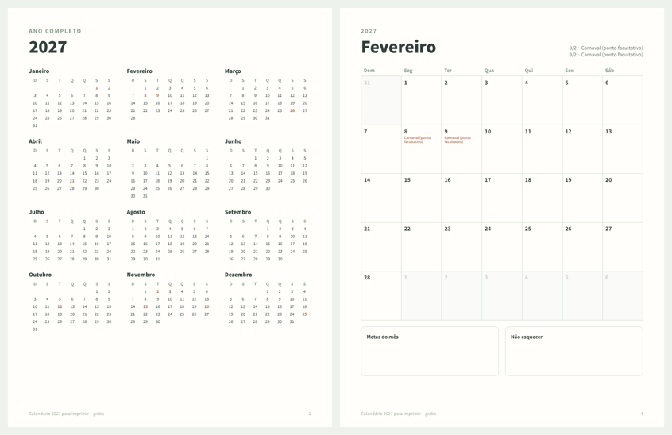

GRÁTIS · PDF · 2027
Calendário 2027 para imprimir grátis, com feriados
Um PDF de 13 páginas: o ano completo em uma página e uma página para cada mês de 2027, com os feriados nacionais do Brasil marcados e espaço para anotar. Semana de domingo a sábado, tamanho carta (imprime em A4 com «ajustar à página»). Sem e-mail nem cadastro.
Baixar o calendário 2027 (PDF, 13 páginas)Imprima só os meses que precisar, quantas vezes quiser.

Feriados nacionais de 2027
| Data | Feriado |
|---|---|
| sex, 1/1 | Confraternização Universal |
| seg e ter, 8 e 9/2 | Carnaval (ponto facultativo) |
| sex, 26/3 | Sexta-feira Santa |
| qua, 21/4 | Tiradentes |
| sáb, 1/5 | Dia do Trabalho |
| qui, 27/5 | Corpus Christi (ponto facultativo) |
| ter, 7/9 | Independência do Brasil |
| ter, 12/10 | Nossa Senhora Aparecida |
| ter, 2/11 | Finados |
| seg, 15/11 | Proclamação da República |
| sáb, 20/11 | Dia da Consciência Negra |
| sáb, 25/12 | Natal |
Feriados estaduais e municipais variam: anote os da sua cidade. A Páscoa de 2027 é no domingo, 28 de março.
Quer organizar o dinheiro também?
Use a planilha de gastos grátis para Excel e Google Sheets, ou calcule o seu 13º salário.